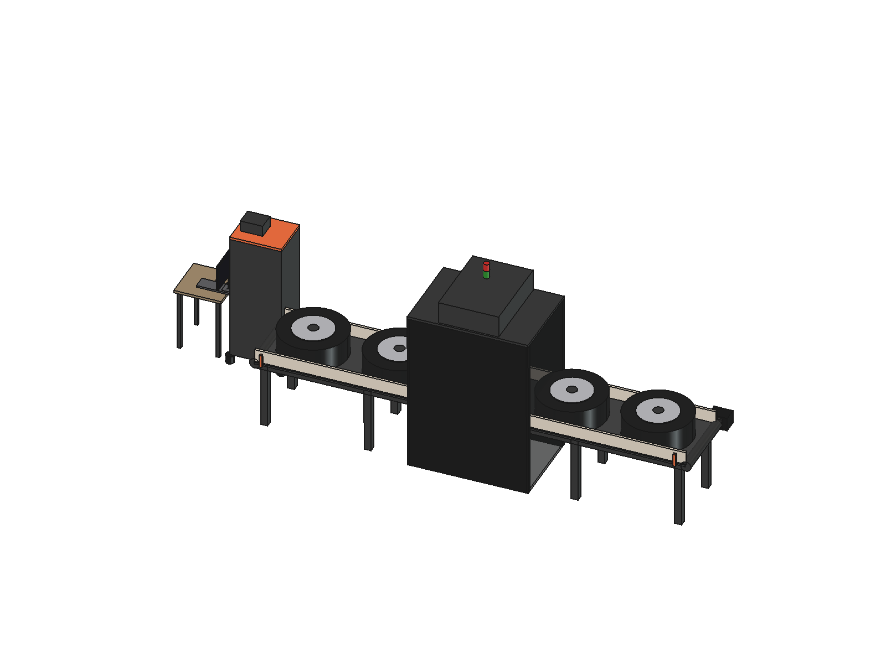
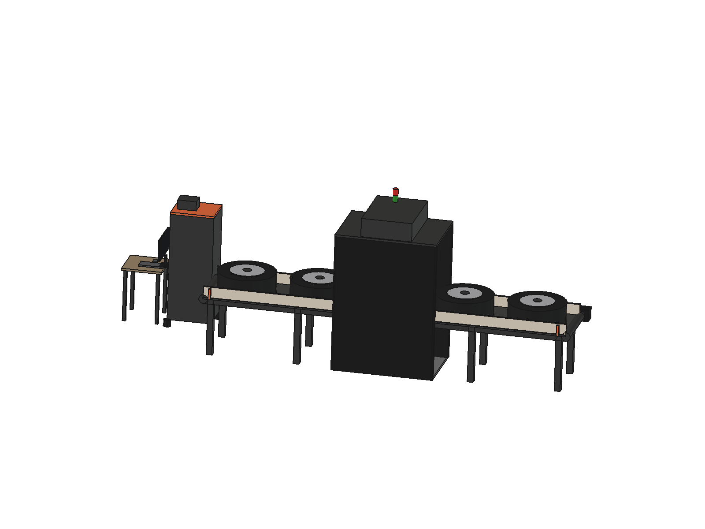
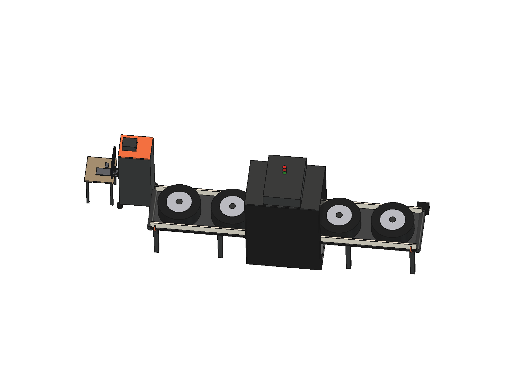

| Max. wheel diameter | 85 cm |
|---|---|
| Max. wheel width | 50 cm |
| Conveyor belt length | 5 m |
| judgmentConveying | Single-motor belt, wheel passes flat, no stop or rotation — sufficient for an overhead read |
|---|---|
| judgmentRead station | Floor-standing, light-sealed cabin — blocks outside light for consistent OCR exposure |
| judgmentCamera | 1 overhead industrial camera + diffuse LED ring light |
| confirmedRead target | Brand logo, size text, DOT code (top-facing sidewall) |
| judgmentControl | Mobile electrical panel (VFD, start/stop, e-stop) — site electrical layout not yet known |
| judgmentOperator display | 24" industrial monitor + mini PC at the conveyor head |



model/sample.glb for a real export (from FreeCAD,
Onshape, or any CAD tool that exports glTF/GLB) to show the actual design here
instead of the static renders above.